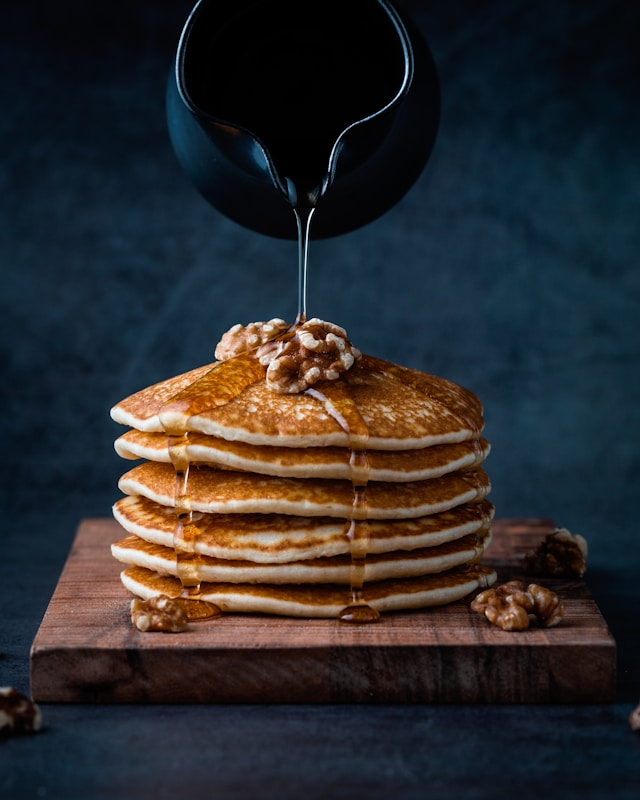

Banana Pancakes
Home

Photo by Mae Mu on Unsplash
Banana pancakes are a simple recipe, great to get children in the kitchen, and ideal for a breakfast.
Best served with your favourite jam/marmalade, this dish takes under ten minutes,
and will be great for your start of day.
Ingredients
- two bananas
- three chicken eggs
- 4 tbsp of butter
- 50g of oats
Preparation
-
On a blender, crack the eggs, and add the bananas and the oats.
More oats will make the pancakes fluffier.
-
Turn on the blender until you have an homogeneous substance.
-
On a pan, add one tablespoon of butter and heat is slowly.
Let it melt until the whole pan area is covered in butter.
-
Add a portion of the mix to the pan.
This will be your first pancake.
It is important to keep the heat low so that the pancake does not burn before it gets cooked.
-
When the pancake looks fluffy, flip it so that the other side also gets cooked.
-
Repeat the previous three steps until you run out of mixture.